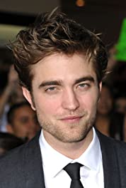

About Robert
Robert Douglas Thomas Pattinson was born May 13, 1986 in London, England, to Richard Pattinson, a car
dealer importing
vintage cars, and Clare Pattinson (née Charlton), who worked as a booker at a model agency. He grew up
in Barnes,
southwest London with two older sisters. Robert discovered his love for music long before acting and
started learning
the guitar and piano at the age of four. He became a big cinephile for love of auteur cinema in his
early teens and
preferred to watch films rather than doing his homework. In his late teens and early twenties, he used
to perform solo
acoustic guitar gigs at open mic nights in bars and pubs around London where he sung his own written
songs. Thinking
about becoming a musician or going to university to study speech-writing, he never thought about
pursuing an acting
career and his drama teacher in school even advised him not to join the drama club because she thought
he wasn't made
for the creative subjects. But as a teenager, he joined the local amateur theatre club after his father
convinced him to
attend because he was quite shy. At age 15 and after two years of working backstage, he auditioned for
the play 'Guys
and Dolls' and he got his first role as a Cuban dancer with no lines. He got the lead part in the next
play 'Our Town',
was spotted by a talent agent who was sitting in the audience and he began looking for professional
roles.